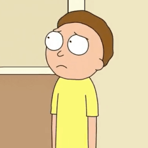
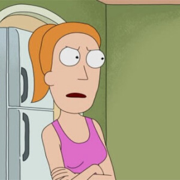
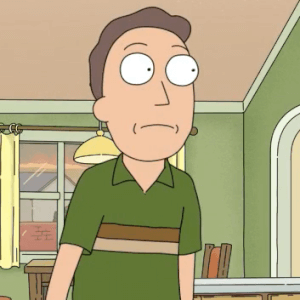
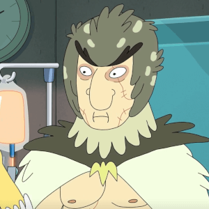
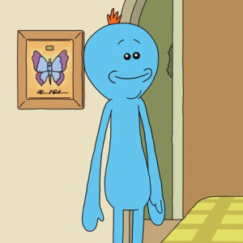
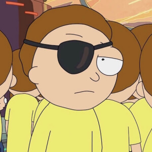

Rick Sanchez
Estado: Vivo. Científico y protagonista principal de la serie.
Conoce personajes, descubre datos curiosos y viaja por las dimensiones del universo de Rick and Morty.
Estado: Vivo. Científico y protagonista principal de la serie.

Estado: Vivo. Nieto de Rick y compañero de sus aventuras interdimensionales.

Estado: Vivo. Hermana de Morty y nieta de Rick.
Estado: Vivo. Hija de Rick y madre de Morty y Summer.

Estado: Vivo. Es el padre de Morty y esposo de Beth.

Estado: Vivo. Amigo de Rick y personaje importante de sus aventuras.

Estado: Vivo. Criatura creada para cumplir tareas específicas.

Estado: Vivo. Una versión alternativa de Morty con sus propios objetivos.